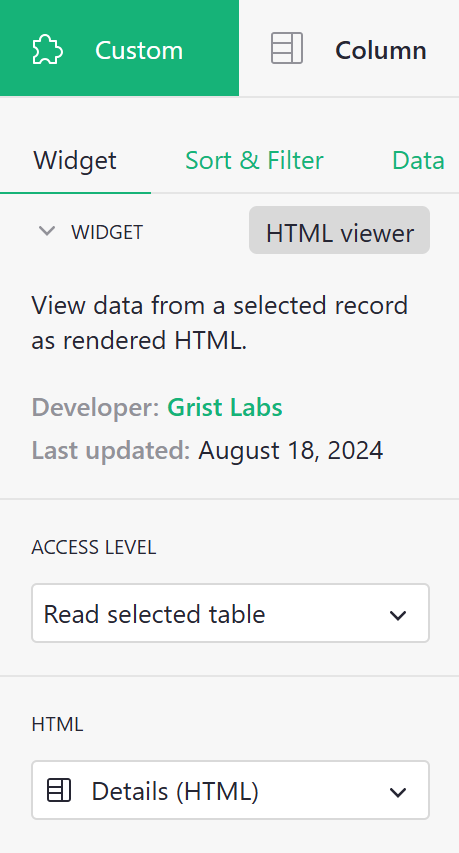
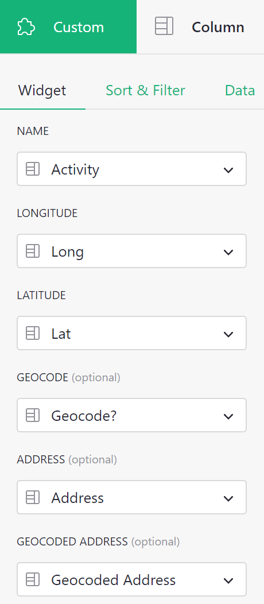
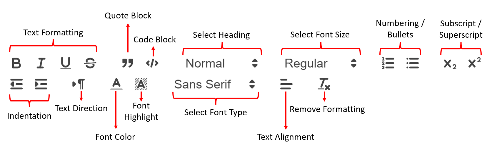

Warning
La traduction proposée ici a été générée automatiquement par le modèle d’intelligence artificielle GPT-4o. Il est probable qu’elle contienne des imperfections.
Mais la bonne nouvelle est que vous pouvez rejoindre la communauté de traduction pour améliorer le contenu fourni ici 👋.
Widget de page : Personnalisé#
Le widget Personnalisé permet à un utilisateur d’insérer presque tout dans son document. Pour créer un widget personnalisé, il faut actuellement des connaissances en développement web et un accès à un serveur web public (par exemple, GitHub Pages).
Une bonne utilisation des widgets personnalisés est de visualiser des enregistrements ou des tables de nouvelles manières. Utiliser Grist comme modèle de données et HTML/CSS/JS modernes comme vue est très puissant.
Exemple minimal#
Pour démontrer à un développeur web comment fonctionnent les widgets personnalisés, il existe un exemple minimal fonctionnel à :
https://public.getgrist.com/911KcgKA95oQ/Minimal-Custom-Widget/m/fork
L’exemple montre une table avec des données aléatoires (noms d’animaux de compagnie) et deux widgets personnalisés, l’un montrant la ligne sélectionnée dans la table au format JSON, et l’autre montrant toutes les lignes de la table au format JSON. Si vous modifiez des données dans la table ou déplacez le curseur, les widgets personnalisés se mettent à jour en conséquence.

Le code source des widgets se trouve à :
https://github.com/gristlabs/grist-widget/tree/master/inspect
Il est réduit à l’essentiel. Voici le code source complet du widget onRecord qui montre une ligne de données :
<!DOCTYPE html>
<html lang="fr">
<head>
<meta charset="utf-8">
<title>onRecord</title>
<script src="https://docs.getgrist.com/grist-plugin-api.js"></script>
</head>
<body>
<pre id="readout">En attente de données...</pre>
<script>
grist.ready();
grist.onRecord(function(record) {
document.getElementById('readout').innerHTML = JSON.stringify(record, null, 2);
});
</script>
</body>
</html>
Les parties “Grist” de ceci sont :
- Inclusion de
https://docs.getgrist.com/grist-plugin-api.jspour obtenir l’API Grist. - Appel de
grist.readypour informer Grist que le widget est prêt à fonctionner. - Appel de
grist.onRecordpour s’abonner à la ligne actuelle de la table.
Après cela, tout le reste est du HTML/CSS/JS classique. Une fois que vous avez des données qui arrivent, vous pouvez les rendre de la manière que vous souhaitez, en utilisant React, Vue.js ou votre framework préféré. Par exemple, vous pourriez rendre des enregistrements sous forme de facture imprimable, ou utiliser un format de graphique obscur que Grist ne prend pas actuellement en charge.
Ajouter un widget personnalisé#
Pour ajouter un widget personnalisé qui lit à partir d’une table, cliquez sur Ajouter nouveau, puis Ajouter un widget à la page. Ensuite :
- Pour
Sélectionner un widget, choisissezPersonnalisépour obtenir un widget personnalisé. - Pour
Sélectionner des données, choisissez la table à partir de laquelle vous souhaitez que le widget lise les données. - Optionnellement, choisissez
Sélectionner parpour contrôler davantage les données sélectionnées (lisez Lier des widgets de page pour les possibilités).

Le widget personnalisé est initialement vide. Pour le configurer, cliquez sur le bouton à trois points en haut à droite du widget personnalisé et sélectionnez “Options du widget”.
Dans la section des paramètres PERSONNALISÉ où il est indiqué Entrer l'URL personnalisée, mettez le lien vers votre widget personnalisé. Voici un widget de test pour simplement afficher les données de la table au format JSON :
https://gristlabs.github.io/grist-widget/inspect/onRecords.html
Et voici un pour montrer uniquement la ligne sélectionnée (assurez-vous que “Sélectionner par” est défini pour le widget personnalisé) :
https://gristlabs.github.io/grist-widget/inspect/onRecord.html
Niveau d’accès#
Lorsque vous mettez un lien vers une page web personnalisée, elle sera immédiatement rendue à l’intérieur de la section. Vous avez maintenant la possibilité d’accorder à cette page web l’accès aux données de votre document. Les niveaux d’accès suivants sont disponibles :
- Pas d’accès au document : la page web est affichée dans le widget, mais elle n’a pas accès au document Grist contenant le widget.
- Lire la table sélectionnée : la page web est affichée dans le widget et reçoit un accès en lecture à la table que le widget est configuré pour sélectionner des données.
- Accès complet au document : la page web est affichée dans le widget et a un accès complet pour lire et modifier le document Grist contenant le widget.
La page web doit être possédée et contrôlée par vous ou par quelqu’un en qui vous avez confiance. Avec les permissions Lire la table sélectionnée, un widget pourrait envoyer les données auxquelles il accède à un tiers. Avec les permissions Accès complet au document, un widget pourrait envoyer toutes les données du document à un tiers et modifier votre document de n’importe quelle manière.
Si vous écrivez votre propre widget personnalisé, vous pouvez spécifier le niveau d’accès dont il a besoin dans le message prêt initial. Les valeurs possibles sont : none, read table et full.
<script>
grist.ready({
requiredAccess: 'read table'
});
</script>
Cela indique à Grist de demander le niveau d’accès souhaité à l’utilisateur. Votre widget sera rechargé avec le niveau d’accès approprié si l’utilisateur approuve la demande.

Si vous souhaitez être informé du niveau d’accès, vous pouvez vous abonner à l’événement onOptions qui est envoyé au widget après qu’il ait informé Grist qu’il est prêt :
grist.onOptions(function(options, interaction) {
console.log(interaction.access_level);
});
Pour l’instant, il suffit de sauter le paramètre options (il sera décrit dans la section Options de widget). Le niveau d’accès actuel fait partie du deuxième paramètre, qui décrit comment Grist interagira avec votre widget.
Exemple de facture#
L’exemple minimal ci-dessus a montré des enregistrements au format JSON simple, mais le widget peut devenir aussi sophistiqué que vous le souhaitez. Voici un exemple montrant un enregistrement sous forme de facture imprimable :

Vous pouvez lire les détails sur la façon d’utiliser ce widget dans notre exemple de préparation de facture. Le widget de facture est hébergé à :
Et le code source HTML/CSS/JS peut être consulté à :
https://github.com/gristlabs/grist-widget/tree/master/invoices
Il utilise Vue.js et grist.onRecord.
Création d’un widget personnalisé#
Comme vous l’avez vu, écrire un widget simple qui utilise des données d’une table est très facile. Tout d’abord, vous devez informer Grist que vous êtes prêt et ensuite vous abonner à l’un des événements disponibles : onRecord, onRecords ou onOptions.
grist.ready();
grist.onRecord(function (record) {
// Le curseur a été déplacé.
});
grist.onRecords(function (record) {
// Les données dans la table ont changé.
});
grist.onOptions(function (options, interaction) {
// La configuration a changé.
});
Disons que vous souhaitez créer un widget personnalisé qui affichera une image à partir d’une URL et éventuellement une ligne de texte en dessous comme titre de l’image. Vous devrez lire deux valeurs de deux colonnes : Lien et Titre.
Vous pourriez accéder à ces colonnes directement en utilisant les noms de colonnes littéraux dans votre script. Voici un exemple complet de code source de widget qui fera le travail :
<script src="https://docs.getgrist.com/grist-plugin-api.js"></script>
<img id="image" src=""/>
<div id="title"></div>
<script>
grist.ready({requiredAccess: 'read table'});
grist.onRecord(function (record) {
document.getElementById('image').src = record.Lien;
document.getElementById('title').innerText = record.Titre;
});
</script>
Lorsque vous commencez, c’est une bonne approche, mais elle présente deux inconvénients majeurs. Chaque fois que vous renommez une colonne, vous devrez également modifier le code source de votre widget. De plus, utiliser ce widget sur une table différente ou le partager avec vos amis peut être difficile car les noms de colonnes pourraient être différents. Pour aider avec cela, Grist propose l’API de mappage de colonnes.
Mappage de colonnes#
Au lieu d’utiliser directement les noms de colonnes, vous pouvez demander à l’utilisateur de choisir quelle colonne utiliser comme Lien et Titre. La liste des colonnes attendues peut être envoyée à Grist dans l’appel prêt :
grist.ready({columns: ['Lien', 'Titre']});
En utilisant cette information, dans le panneau de création, Grist masquera la section régulière “Colonnes visibles” et affichera des sélecteurs de colonnes spécialisés.

Votre widget recevra cette configuration de mappage dans le paramètre onRecord ou onRecords dans le deuxième paramètre. Vous pouvez utiliser cette configuration pour effectuer les mappages vous-même ou utiliser la fonction d’assistance mapColumnNames pour le faire pour vous.
<script src="https://docs.getgrist.com/grist-plugin-api.js"></script>
<img id="image" src=""/>
<div id="title"></div>
<script>
grist.ready({columns: ['Lien', 'Titre'], requiredAccess: 'read table'});
grist.onRecord(function (record, mappings) {
const mapped = grist.mapColumnNames(record);
// D'abord, vérifiez si toutes les colonnes ont été mappées.
if (mapped) {
document.getElementById('image').src = mapped.Lien;
document.getElementById('title').innerText = mapped.Titre;
console.log(`Utilisation des colonnes ${mappings.Lien} et ${mappings.Titre}`);
} else {
// L'assistant a renvoyé une valeur nulle. Cela signifie que toutes les colonnes requises n'ont pas été mappées.
console.error("Veuillez mapper toutes les colonnes");
}
});
</script>
Maintenant, si vous renommez l’une des colonnes, le widget fonctionnera toujours. Vous pouvez également utiliser ce widget dans n’importe quelle autre table ou le partager avec un ami, car il ne dépend pas de votre structure de table et peut être facilement configuré.
Dans la configuration utilisée ci-dessus, nous avons dit à Grist que toutes les colonnes sont requises, et l’utilisateur peut choisir n’importe quelle colonne même si la colonne ne contient pas de valeur texte. Pour être plus précis, nous pouvons inclure plus d’options dans la demande. Par exemple :
grist.ready({columns: [
{
name: "Lien", // Quel champ nous allons lire.
title: "Lien de l'image", // Nom de champ convivial.
optional: false, // Est-ce un champ optionnel.
type: "Texte", // Quel type de colonne nous attendons.
description: "Un texte" // Description d'un champ.
allowMultiple: false // Permet l'attribution de plusieurs colonnes.
}
]});
Le paramètre optional est important pour le bon fonctionnement de l’assistant mapColumnNames. Cet assistant ne renverra un enregistrement mappé que lorsque toutes les colonnes requises (non optionnelles) seront choisies.
Par défaut, Grist permettra à l’utilisateur de choisir n’importe quel type de colonne. Pour autoriser uniquement une colonne d’un type spécifique, vous devez définir une propriété type. Voici tous les types valides :
Int (Colonne entière), Numeric (Colonne numérique), Texte, Date, DateTime, Bool (Colonne de bascule), Choice, ChoiceList, Ref (Colonne de référence), RefList (Liste de références), Attachments.
La valeur par défaut de type est Any, donc Grist permettra à l’utilisateur de choisir n’importe quel type de colonne. Vous pouvez également spécifier une liste de types, par exemple Date,DateTime. Dans ce cas, Grist permettra à l’utilisateur de choisir n’importe quelle colonne qui correspond à l’un des types de la liste.
Utilisez les champs title et description pour aider vos utilisateurs à comprendre quel est le but de la colonne. La description sera affichée juste en dessous du nom de la colonne, et le title sera utilisé comme étiquette de colonne. Les deux sont optionnels et vous pouvez y mettre n’importe quel texte que vous souhaitez.
Si vous devez mapper plusieurs colonnes (par exemple dans un widget de graphique personnalisé), vous pouvez utiliser l’option allowMultiple. Cela permettra à vos utilisateurs de choisir un ensemble de colonnes qui seront renvoyées sous forme de liste de noms de colonnes de table mappés. L’assistant mapColumnNames renverra alors un tableau de valeurs de colonnes mappées dans un seul champ.
Supposons que l’utilisateur supprime une colonne ou change son type de sorte qu’elle ne corresponde plus au type demandé par le widget. Dans ce cas, Grist supprimera automatiquement cette colonne du mappage.
Options de widget#
Si votre widget a besoin de stocker certaines options, Grist propose une API de stockage clé-valeur simple que vous pouvez utiliser. Voici quelques extraits de code JavaScript qui montrent comment interagir avec cette API :
// Stocker une simple valeur de texte.
await grist.setOption('color', '#FF0000');
// Stocker des objets complexes sous forme de JSON.
await grist.setOption('settings', {lines: 10, skipFirst: true});
// Lire l'option précédemment enregistrée
const color = await grist.getOption('color');
// Effacer toutes les options.
await grist.clearOptions();
// Obtenir et remplacer toutes les options.
await grist.getOptions();
await grist.setOptions({...});
Vous pouvez expérimenter cela vous-même. Voici un widget de test qui démontre comment utiliser cette API :
https://gristlabs.github.io/grist-widget/inspect/onOptions.html
Lorsque votre widget enregistre ou modifie certaines options, l’icône en haut de la section devient verte. Vous pouvez soit appliquer ces options au widget, soit annuler cette modification.

Cela permet aux visualisateurs (utilisateurs avec un accès en lecture seule) ou aux collaborateurs de configurer votre widget sans écraser les paramètres d’origine. Ce comportement devrait vous sembler familier, car cela fonctionne comme le tri et le filtrage sur les vues de table ou de carte.
En enregistrant les options actuelles, vous les appliquerez au widget et les rendrez disponibles pour les autres. En utilisant ce menu, vous pouvez également effacer toutes les options pour revenir à l’état initial du widget. Pour ce faire, appuyez sur la petite icône de poubelle, puis sur Enregistrer.
Grist déclenchera également un événement chaque fois que les options sont modifiées (ou effacées). Voici comment vous pouvez vous abonner à cet événement.
grist.onOptions(function(options, interaction) {
if (options) {
console.log('Couleur actuelle', options.color);
} else {
// Aucune option de widget n'a été enregistrée, retour aux options par défaut.
}
});
Si vous construisez votre propre widget, vous ne devez généralement pas lire les options directement (en utilisant grist.widgetApi.getOption()). Un meilleur modèle consiste à les appliquer toutes lorsqu’elles sont modifiées. L’utilisation du gestionnaire onOptions rendra votre widget plus facile à modifier et à comprendre ultérieurement.
Il y a un scénario supplémentaire à couvrir. Supposons que votre widget ait une sorte d’écran de configuration personnalisé. Dans ce cas, vous aurez probablement besoin d’un bouton ou d’un autre élément d’interface utilisateur que l’utilisateur peut utiliser pour l’afficher. Cet élément d’interface utilisateur supplémentaire sera probablement rarement utilisé par vous ou vos collaborateurs, donc il n’est pas logique de l’afficher tout le temps. Pour aider avec cela, Grist propose une option d’interaction supplémentaire que vous pouvez envoyer dans le message prêt :
grist.ready({
onEditOptions: function() {
// Votre logique personnalisée pour ouvrir l'écran de configuration personnalisé.
}
});
Cela indiquera à Grist d’afficher un bouton supplémentaire Ouvrir la configuration dans le panneau de création et le menu de section. Lorsqu’il est cliqué, cela déclenchera votre gestionnaire, que vous pouvez utiliser pour afficher votre propre écran de configuration personnalisé.

Lien de widget personnalisé#
Les widgets personnalisés peuvent également être utilisés comme source de liaison (voir Lier des widgets). Tout ce que vous avez à faire est d’informer Grist que votre widget prend en charge le lien en passant une option supplémentaire à l’appel ready (voir API de widget) :
grist.ready({
allowSelectBy: true
});
Cela activera l’option Sélectionner par dans le panneau de configuration du widget. Vous pouvez maintenant utiliser votre widget pour contrôler la position du curseur dans les widgets liés. Pour ce faire, vous devez appeler la fonction setCursorPos :
// Informer Grist que le curseur doit être déplacé vers la ligne avec l'ID 20.
grist.setCursorPos({rowId: 20});
// ou informer que votre widget crée une nouvelle ligne.
grist.setCursorPos({rowId: 'new'});
Widgets personnalisés préfabriqués#
Tous les widgets personnalisés préfabriqués sont disponibles dans le panneau de configuration du widget personnalisé sur le côté droit de l’écran sous le menu déroulant Personnalisé.

Graphiques avancés#
Le widget personnalisé Graphiques avancés vous donne plus de puissance et de flexibilité que les graphiques intégrés de Grist, offrant une grande variété de types de graphiques ainsi qu’un contrôle accru sur le style et la mise en page. C’est une version de Chart Studio de Plotly, consultez leurs tutoriels pour une aide plus détaillée.
Vous devrez définir le niveau d’accès sur “Accès complet au document”. Ne vous inquiétez pas, le widget ne lit que les données de la table sélectionnée, ne les envoie à aucun serveur et ne modifie ou n’apporte d’autres changements à votre document.
Voici ce que vous devriez voir :

Cliquez sur le grand bouton bleu “+ Trace” pour commencer. Cela ajoutera un panneau comme suit :

Cliquez sur “Dispersion” pour choisir un type de graphique différent tel que Bar ou Ligne. Ensuite, cliquez sur les menus déroulants “Choisir des données” pour sélectionner les colonnes que vous souhaitez tracer.
Vous pouvez ajouter plusieurs traces pour superposer différents graphiques. Essayez différents panneaux dans la barre latérale pour personnaliser davantage le graphique. Par exemple, allez dans Style > Axes > Titres pour ajouter une étiquette à chaque axe. Consultez les tutoriels de studio de graphique pour en savoir plus.
Au fur et à mesure que vous personnalisez le widget, n’oubliez pas de cliquer régulièrement sur le bouton ‘Enregistrer’ au-dessus du widget pour conserver votre configuration.
Copier dans le presse-papiers#
Copier dans le presse-papiers copie une valeur de la colonne spécifiée de l’enregistrement sélectionné. Lors de la configuration du widget, vous devrez sélectionner la colonne à partir de laquelle vous souhaitez copier des données.

Notez que vous pouvez également copier des données d’une cellule sélectionnée en utilisant le raccourci clavier Ctrl + C sur Windows ou ⌘ + C sur Mac. Pour coller, utilisez Ctrl + V ou ⌘ + V.
Vous pouvez trouver un exemple du bouton copier dans le presse-papiers dans notre Webinaire 7 (Widgets personnalisés) modèle. Vous pouvez également regarder une vidéo explicative de notre Webinaire sur les widgets personnalisés.
Intégrateur Dropbox#
Voir et accéder aux fichiers enregistrés sur Dropbox.

Pour commencer, ajoutez une nouvelle colonne à votre table pour stocker vos liens Dropbox.
Ensuite, ajoutez un nouveau widget personnalisé à la page. Choisissez la table de données qui contient les liens Dropbox et ‘Sélectionner par’ cette même table.

Pour configurer, sélectionnez ‘Intégrateur Dropbox’ dans le menu déroulant Personnalisé et autorisez l’accès pour lire la table sélectionnée. Sous ‘Lien Dropbox’, sélectionnez la colonne qui contient vos liens Dropbox.

Vous pouvez créer des liens vers des dossiers ou des fichiers spécifiques dans Dropbox. Cliquez sur ‘Partager’, puis définissez les permissions pour le lien. Vous pouvez choisir de permettre à quiconque ayant le lien de visualiser ou d’éditer. Créez ensuite, puis copiez le lien. Collez ce lien dans votre colonne Lien Dropbox dans Grist. Notez que les utilisateurs ne peuvent pas modifier directement dans le widget personnalisé même si des permissions d’édition sont accordées. Pour éditer, sélectionnez l’objet dans l’intégrateur Dropbox et il s’ouvrira dans un nouvel onglet où il pourra être modifié directement dans Dropbox.

Vous pouvez consulter un exemple de l’intégrateur Dropbox dans notre Préparation à l’ouragan modèle.

Lecteur vidéo Grist#
Intégrez des vidéos provenant de sources en ligne telles que YouTube, Vimeo, Facebook Video, Google Drive et plus encore.

Pour commencer, ajoutez une nouvelle colonne à votre table pour stocker vos URL vidéo.
Ensuite, ajoutez un nouveau widget personnalisé à la page. Choisissez la table de données qui contient les URL vidéo et ‘Sélectionner par’ cette même table.

Pour configurer, sélectionnez ‘Lecteur vidéo Grist’ dans le menu déroulant Personnalisé et autorisez l’accès pour lire la table sélectionnée. Sous ‘URL’, sélectionnez la colonne qui contient vos URL vidéo.

Pour la plupart des vidéos en ligne, y compris les vidéos YouTube et les vidéos stockées sur Google Drive, vous pouvez simplement cliquer sur l’option ‘Partager’ et copier l’URL.

Pour certaines autres vidéos, vous pourriez voir cette erreur :

Si cela se produit, vous devrez prendre l’URL à partir du code d’intégration.
Après avoir cliqué sur l’option de partage de la vidéo, cliquez sur l’option ‘Intégrer’.

Ensuite, cliquez pour copier le code.

Le code qu’il vous donne ressemblera à ceci :

Copiez l’URL qui se trouve entre les guillemets après src. La portion mise en surbrillance dans la capture d’écran ci-dessous est ce que vous copieriez pour cette vidéo Facebook particulière.

Collez cette URL dans votre colonne URL dans Grist et la vidéo apparaîtra maintenant dans le widget personnalisé Lecteur vidéo Grist.

Visionneuse HTML#
La visionneuse HTML affiche du HTML écrit dans une cellule.
Pour des widgets d’édition de texte, consultez nos widgets personnalisés Markdown et Bloc-notes.

Pour commencer, ajoutez une nouvelle colonne à votre table. C’est là que vous écrirez du HTML.
Ensuite, ajoutez un nouveau widget personnalisé à la page. Choisissez la table de données qui contient le HTML et ‘Sélectionner par’ cette même table.

Pour configurer, sélectionnez ‘Visionneuse HTML’ dans le menu déroulant Personnalisé et autorisez l’accès pour lire la table sélectionnée. Sous ‘HTML’, sélectionnez la colonne de texte qui contient votre HTML.

Votre HTML sera visible dans le widget personnalisé.

Pour obtenir de l’aide sur le formatage HTML, consultez ce guide de W3 Schools : Formatage de texte HTML
Vous pouvez trouver un exemple de la visionneuse HTML dans notre Webinaire 7 (Widgets personnalisés) modèle. Vous pouvez également regarder une vidéo explicative de notre Webinaire sur les widgets personnalisés.
Visionneuse d’images#
Voir des images à partir d’URL.

Pour commencer, ajoutez une nouvelle colonne à votre table. C’est là que vous ajouterez l’URL de votre image.
Ensuite, ajoutez un nouveau widget personnalisé à la page. Choisissez la table de données qui contient l’URL de l’image et ‘Sélectionner par’ cette même table.

Pour configurer, sélectionnez ‘Visionneuse d’images’ dans le menu déroulant Personnalisé et autorisez l’accès pour lire la table sélectionnée. Sous ‘URL de l’image’, sélectionnez la colonne qui contient les URL de vos images.

Pour copier l’URL d’une image, faites un clic droit sur la photo puis ‘Copier l’adresse de l’image’. Cela copie l’URL dans votre presse-papiers. Collez cette URL dans votre colonne spécifiée dans Grist.

De plus, vous pouvez ajouter plusieurs images pour un enregistrement spécifique en ajoutant plusieurs URL d’images, séparées par un espace ou une nouvelle ligne, dans une seule cellule.
Veuillez noter qu’une virgule ne fonctionnera pas pour séparer les liens.

Lorsque plusieurs URL d’images sont présentes, le widget personnalisé visionneuse d’images fonctionnera comme un carrousel. Cliquez sur les flèches pour voir d’autres images.

Pour un exemple du widget visionneuse d’images, consultez notre Base de données des parcs nationaux des États-Unis, et ajoutez une critique de parc pendant que vous y êtes !
Vous pouvez également consulter notre modèle Générateur de mèmes pour un autre excellent exemple.
Pour une vidéo explicative, assurez-vous de regarder notre Webinaire sur les widgets personnalisés !
Notebook JupyterLite#
Ce widget vous permet d’exécuter du code Python personnalisé dans JupyterLite, une version de JupyterLab fonctionnant entièrement dans le navigateur. Vous pouvez utiliser la pleine API de plugin de widget personnalisée et accéder ou modifier n’importe quelles données dans le document (sous réserve des Règles d’accès), débloquant presque des possibilités illimitées pour les utilisateurs avancés.
Vous serez présenté avec un notebook où vous pouvez entrer et exécuter du code Python, par exemple :

Après avoir tapé du code dans une cellule, cliquez sur le bouton de lecture ou appuyez sur Shift+Entrée pour exécuter cette cellule.
Contrairement aux formules, le code n’est pas enregistré automatiquement. Vous devez appuyer sur le bouton ‘Enregistrer’ habituel au-dessus du widget (en dehors du notebook) pour conserver le code dans votre document Grist. D’autre part, les modifications des paramètres dans le notebook (par exemple, les raccourcis clavier) sont enregistrées dans le stockage local de votre navigateur, donc elles ne sont pas partagées avec d’autres utilisateurs du document.
Un objet spécial appelé grist est automatiquement disponible pour être utilisé dans le code Python, qui reflète de nombreuses méthodes courantes de l’API de plugin JS. Notez que beaucoup de ces méthodes sont asynchrones, donc vous devriez utiliser await avant de les appeler.
async fetch_selected_table(): renvoie les données de la table soutenant le widget notebook.async fetch_selected_record(row_id=None): renvoie un enregistrement de la table soutenant le widget notebook. Sirow_idest spécifié, renvoie l’enregistrement à cette ligne. Sinon, renvoie l’enregistrement à la position actuelle du curseur dans un widget lié au widget notebook.async fetch_table(table_id): renvoie les données de la table spécifiée. Notez que cela diffère defetch_selected_table(même pour la même table) de plusieurs manières :- Le widget doit avoir un accès complet au document.
- Toutes les colonnes sont incluses, tandis que
fetch_selected_tableexclut les colonnes qui sont cachées dans la configuration du widget. - Toutes les lignes sont incluses, tandis que
fetch_selected_tableprend en compte les filtres du widget et ‘SÉLECTIONNER PAR’. - Les données ne sont pas triées selon la configuration du widget.
- Les données sont récupérées depuis le serveur, donc la méthode peut être plus lente.
- Les valeurs pour les colonnes de référence sont des ID de ligne de la table référencée, tandis que
fetch_selected_tablerenvoie les valeurs affichées en fonction de la configuration ‘AFFICHER LA COLONNE’.
on_record(callback): enregistre une fonction de rappel à exécuter lorsque le curseur se déplace dans un widget lié au widget notebook, c’est-à-dire le widget choisi dans le menu déroulant “SÉLECTIONNER PAR” dans la section Données de la configuration du widget. La fonction de rappel recevra l’enregistrement à la position actuelle du curseur. Vous pouvez également l’utiliser comme décorateur, c’est-à-dire@grist.on_record.on_records(callback): similaire àon_record, mais s’exécute lorsque les données source du widget changent. La fonction de rappel recevra les mêmes données que celles renvoyées parfetch_selected_table.get_table(table_id): renvoie une classeTableOperationssimilaire à l’interface de l’API de plugin JS habituelle pour effectuer des opérations de type CRUD sur une table. Voir la documentation de l’API de plugin pour les détails sur les paramètres. La classe a les méthodes suivantes :async create(records, parse_strings=True)async update(records, parse_strings=True)async upsert(records, parse_strings=True, add=True, update=True, on_many="first", allow_empty_require=False)async destroy(row_ids)
Vous pouvez également utiliser grist.raw pour un accès direct à l’API de plugin, par exemple await grist.raw.docApi.fetchTable(table_id). Cela peut renvoyer des valeurs de cellule brutes que vous pouvez décoder avec grist.decode_cell_value(value).
Vous pouvez utiliser de nombreuses (mais pas toutes) bibliothèques tierces dans votre notebook, comme pandas. Beaucoup seront installées automatiquement lorsqu’elles seront importées. D’autres nécessiteront d’exécuter %pip install <nom du package> dans une cellule, par exemple %pip install pandas. Notez que c’est %pip et non !pip comme dans un notebook Jupyter classique.
Carte#
Le widget de carte personnalisé vous permet d’afficher des emplacements en utilisant des coordonnées de latitude et de longitude. Si vos données sont une adresse, plutôt qu’au format lat-long, Grist peut convertir l’adresse en coordonnées lat-long.

Si vous utilisez des coordonnées lat-long existantes, vous aurez besoin de trois colonnes : Nom, Longitude et Latitude.

Si vous utilisez une adresse, vous aurez besoin de six colonnes : Nom, Adresse, Géocodage, Longitude, Latitude et Adresse géocodée.

Géocodage est une colonne de type bascule qui doit être définie sur vrai pour tout enregistrement que vous souhaitez convertir d’adresse en coordonnées lat-long à afficher sur la carte.
Si vous souhaitez convertir tous les enregistrements, vous pouvez faire de Géocodage une colonne de formule avec la formule = True. Cela marquera tous les enregistrements comme vrais.

Ensuite, ajoutez un nouveau widget personnalisé à la page. Choisissez la table de données qui contient les adresses ou les coordonnées lat-long et ‘Sélectionner par’ cette même table.

Pour configurer, sélectionnez ‘Carte’ dans le menu déroulant Personnalisé.
Si vous avez déjà des coordonnées lat-long, vous pouvez définir votre niveau d’accès sur Lire la table sélectionnée.
Si vous utilisez une adresse et qu’elle doit être convertie en coordonnées lat-long, vous devrez définir votre niveau d’accès sur Accès complet au document car le widget a besoin de la permission d’écrire dans votre document afin d’ajouter des coordonnées lat-long.

Mappez toutes les colonnes requises. Notez que Nom, Longitude et Latitude sont étiquetés comme requis. Géocodage, Adresse et Adresse géocodée sont listés comme optionnels. Si vous utilisez des adresses et que vous avez besoin que Grist les convertisse en coordonnées lat-long, vous devez mapper les six colonnes.

Après avoir mappé les colonnes nécessaires et sélectionné le niveau d’accès approprié, le widget de carte se remplira.

Vous pouvez configurer la carte pour afficher uniquement l’emplacement sélectionné en cliquant sur l’option ‘Ouvrir la configuration’ dans le panneau de création. Ensuite, décochez ‘Tous les emplacements’. Cliquez sur la coche verte en haut du widget pour enregistrer les paramètres de configuration mis à jour.

Consultez notre modèle Cartographie des emplacements ou notre Liste de crowdsourcing pour deux excellents exemples !
Pour une vidéo explicative, consultez notre Webinaire sur les widgets personnalisés.
Markdown#
Le widget personnalisé Markdown vous permet de formater du texte en utilisant Markdown tout en affichant le texte formaté dans un widget modifiable.
Pour d’autres widgets d’édition de texte, consultez nos widgets personnalisés HTML et Bloc-notes.

Pour commencer, ajoutez une nouvelle colonne à votre table. C’est là que vous ajouterez votre texte qui sera formaté en utilisant Markdown.
Ensuite, ajoutez un nouveau widget personnalisé à la page. Choisissez la table de données qui contient le texte formaté avec Markdown et ‘Sélectionner par’ cette même table.

Pour configurer, sélectionnez ‘Markdown’ dans le menu déroulant Personnalisé et autorisez l’accès complet au document. Comme le widget est également un éditeur, il a besoin de la permission d’écrire dans le document.
Sous ‘Contenu’, sélectionnez la colonne de texte qui contient le formatage Markdown.

Tout formatage Markdown dans la colonne de texte spécifiée s’appliquera et sera visible et modifiable dans le widget personnalisé.

Pour éditer le texte directement dans le widget, cliquez sur l’icône d’édition. Le texte reviendra à afficher la syntaxe Markdown qui peut être modifiée directement dans le widget. Lorsqu’il est en mode édition, l’icône d’édition sera remplacée par l’icône de sauvegarde. Assurez-vous de cliquer sur l’icône de sauvegarde pour enregistrer les modifications et revenir à l’affichage du texte formaté.

Pour obtenir de l’aide sur le formatage Markdown, consultez le Guide Markdown pour la syntaxe de base. Ce guide est également accessible dans le widget Markdown en cliquant sur l’icône d’information en haut du widget. Le guide s’ouvrira dans un nouvel onglet de votre navigateur pour une référence facile.
Vous pouvez trouver un exemple de l’éditeur Markdown dans notre Webinaire 7 (Widgets personnalisés) modèle et consulter cette vidéo explicative de notre Webinaire sur les widgets personnalisés.
Bloc-notes#
Le widget Bloc-notes personnalisé vous permet de formater du texte en utilisant un éditeur de texte enrichi.
Pour d’autres widgets d’édition de texte, consultez nos widgets personnalisés HTML et Markdown.

Pour commencer, ajoutez une nouvelle colonne à votre table. C’est là que les détails de notre texte formaté seront stockés.
Ensuite, ajoutez un nouveau widget personnalisé à la page. Choisissez la table de données qui contient la colonne que nous venons d’ajouter et ‘Sélectionner par’ cette même table.

Pour configurer, sélectionnez ‘Bloc-notes’ dans le menu déroulant Personnalisé et autorisez l’accès complet au document. Comme le widget est également un éditeur, il a besoin de la permission d’écrire dans le document.
Sous ‘Contenu’, sélectionnez la colonne créée pour stocker notre texte formaté.

Si la colonne de texte que vous avez choisie sous Contenu a du texte existant, ce texte apparaîtra dans le widget Bloc-notes, prêt à être formaté.

Utilisez n’importe quelle option montrée ici pour formater votre texte.

Comme vous pouvez le voir dans la capture d’écran ci-dessous, le code pour le texte formaté n’est pas utile à voir dans votre table. Vous éditerez le texte directement dans le widget Bloc-notes afin que vous puissiez cacher cette colonne de votre table de données.

Consultez notre Base de données des parcs nationaux des États-Unis ou notre 🛒 Liste de courses + Planificateur de repas pour deux excellents exemples de Bloc-notes !
Vous pouvez également consulter cette vidéo explicative de notre Webinaire sur les widgets personnalisés.
Étiquettes d’impression#
Le widget personnalisé Étiquettes d’impression vous permet de personnaliser et d’imprimer des étiquettes directement à partir de Grist.

Pour commencer, ajoutez une nouvelle colonne à votre table. Cette colonne contiendra le texte pour l’étiquette. Optionnellement, vous pouvez ajouter une deuxième colonne pour spécifier un nombre d’étiquettes, vous permettant d’imprimer plus d’une même étiquette sans avoir à créer des enregistrements en double.
Ensuite, ajoutez un nouveau widget personnalisé à la page. Choisissez la table de données qui contient les détails de l’étiquette.

Pour configurer, sélectionnez ‘Impression d’étiquettes’ dans le menu déroulant Personnalisé et autorisez l’accès pour lire la table sélectionnée. Sous ‘Étiquette’, sélectionnez la colonne qui contient le texte à inclure sur les étiquettes. Si vous souhaitez imprimer plus d’une étiquette, sélectionnez la colonne qui contient le nombre d’étiquettes pour chaque enregistrement que vous souhaitez imprimer.

Vous pouvez choisir parmi des tailles de feuille standard dans le menu déroulant en haut à gauche du widget. Assurez-vous d’enregistrer les modifications en cliquant sur la coche verte en haut à droite du widget.

Pour laisser des étiquettes vides au début de la feuille, cliquez sur l’icône de paramètres puis spécifiez combien d’étiquettes doivent rester vides. Cela est particulièrement utile si une partie de votre feuille d’étiquettes a déjà été utilisée. Vous pouvez sauter les étiquettes utilisées et commencer à imprimer sur votre première étiquette inutilisée.

Consultez notre modèle Impression d’étiquettes d’expédition et notre modèle Chasse au trésor pour deux excellents exemples !
Vous pouvez également consulter cette vidéo explicative de notre Webinaire sur les widgets personnalisés.